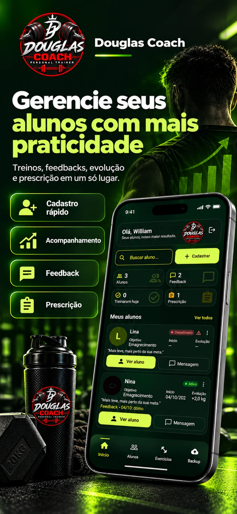
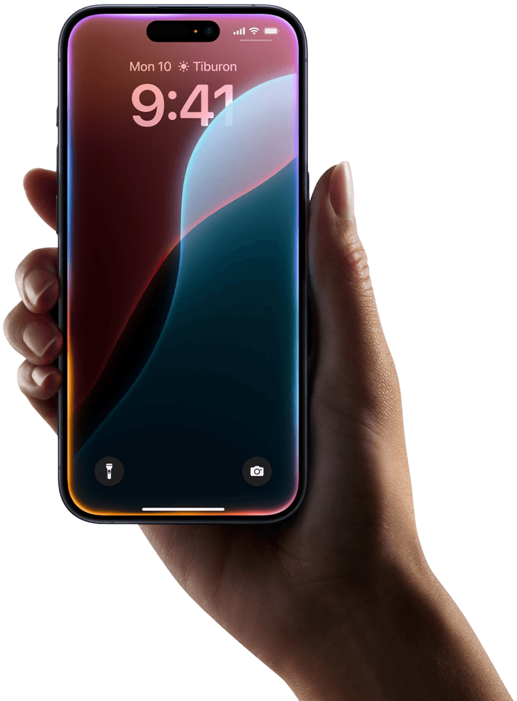
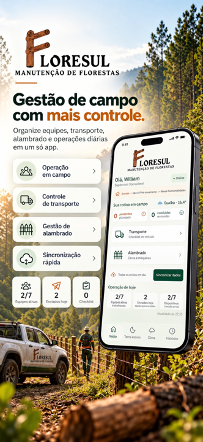
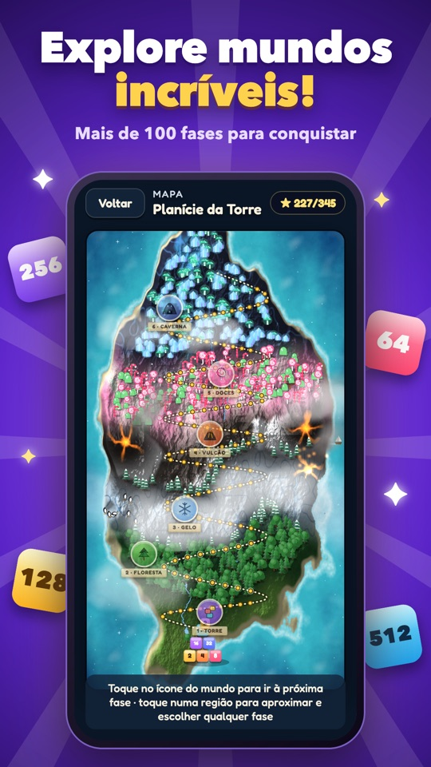
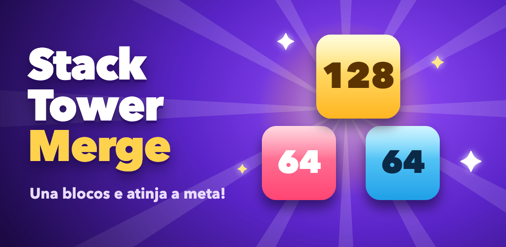
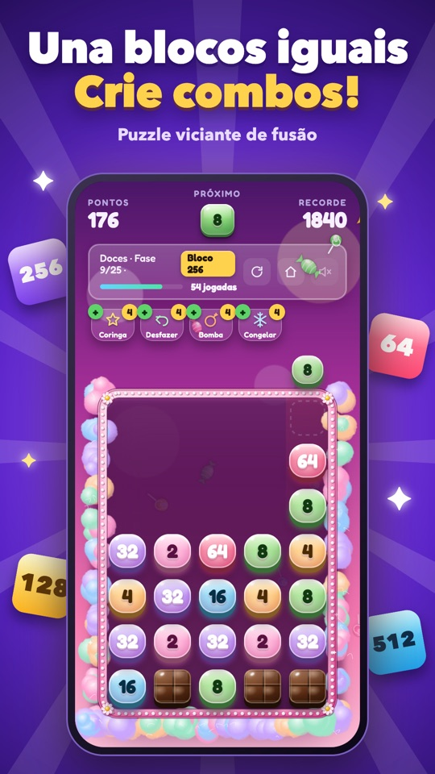
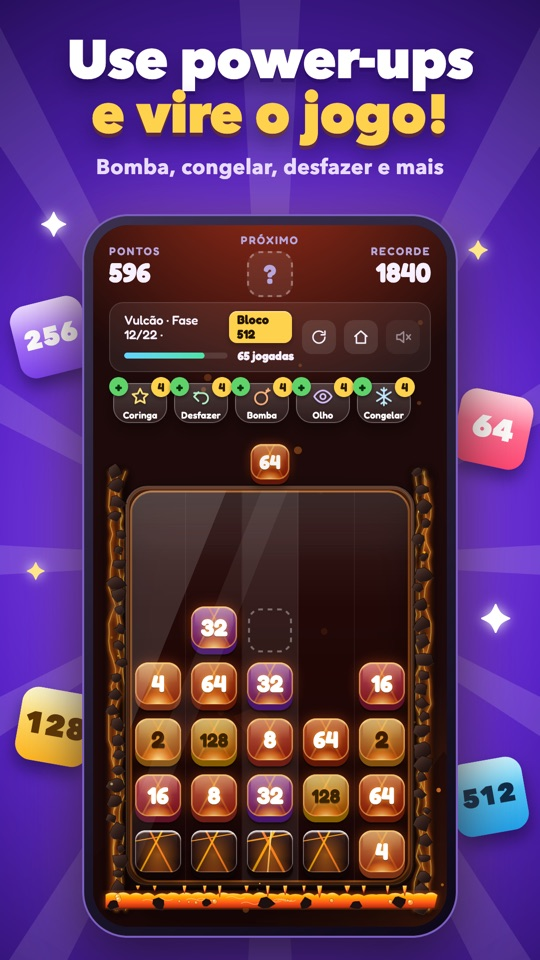

DOUGLAS COACHGerencie alunos
Gerencie alunos
com praticidade.
Treinos, feedbacks, evolução e prescrição em um só lugar, direto no celular do personal.
APLICATIVOS SOB MEDIDA
Desenvolvo aplicativos para iOS, Android e Windows,
sites e sistemas de gestão sob medida para o seu negócio,
do primeiro rascunho à publicação.

↖ Passe o mouse pelos cartões. Cada detalhe tem sua vez.



Role para conhecer os apps ↓
DO PROBLEMA AO APLICATIVO
Soluções simples, pensadas para a rotina de quem usa.
Treinos, feedbacks, evolução e prescrição em um só lugar, direto no celular do personal.
Nina · 04/10 · ótimo.
Menos tempo procurando.
Mais tempo resolvendo.
Os números do dia.
Uma visão simples do próximo passo.
TUDO CONECTADO
Avisos e sincronização mantêm treinador, alunos e equipes de campo na mesma página, sem planilhas e sem troca de mensagens.
Demonstração visual · sem dados reais
Douglas Coach · Treino de hoje concluído
Floresul · Transporte registrado
Floresul · 2 envios concluídos hoje
MUITO ALÉM DO CÓDIGO
Transformo a rotina da sua operação em um app simples de usar e fácil de manter.
Números ilustrativos da demonstração.
APPS PARA EMPRESAS
Apps desenvolvidos individualmente para empresas e profissionais, cada um pensado para a rotina de quem usa. São projetos privados, de uso dos clientes. Escolha um e veja como foi, depois me chame para criar o seu.
App feito sob medida para um personal trainer gerenciar alunos, treinos, feedbacks e prescrições.
JOGO LIVRE · GRÁTIS
Solte blocos nas colunas, junte números iguais e forme o bloco da meta antes que as jogadas ou o espaço acabem. Um puzzle com 145 fases, 7 mundos e um mundo especial de Natal. Jogue de graça, sem cadastro.



APLICATIVOS SOB MEDIDA
Se o seu negócio precisa de um aplicativo para iOS, Android ou Windows, de um site ou de um sistema de gestão, me conte a ideia. Respondo com uma proposta clara de prazo e valor, sem compromisso.
Pedir orçamento pelo WhatsApp ↗ANTES DE COMEÇAR
Os apps Douglas Coach e Floresul foram desenvolvidos por mim, William, da Ruduit Dev, para clientes individuais (empresas), e o jogo Stack Tower Merge é um projeto próprio, livre para todos. As marcas e imagens de cada app pertencem aos seus respectivos titulares.
Sim. O jogo é livre e gratuito, com anúncios opcionais e uma compra única para remover os anúncios. Não precisa de cadastro. Veja a política de privacidade e os termos de uso.
Os painéis, notificações e números deste site são demonstrações visuais. Não existe conexão com os dados dos apps.
Desenvolvo aplicativos para iOS, Android e Windows, além de sites e sistemas de gestão (controle de equipes, clientes, estoque, agenda e relatórios). Conte sua ideia e eu indico o melhor caminho para o seu projeto.
Use o botão "Pedir orçamento" ou "Quero um app": ele abre uma conversa no WhatsApp com a Ruduit Dev. Conte a ideia e eu retorno com prazo e valor.
Você cuida do negócio.
Eu cuido da tecnologia.